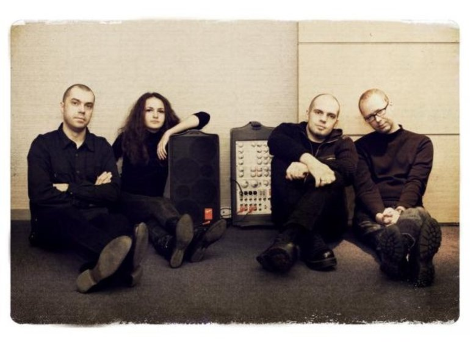
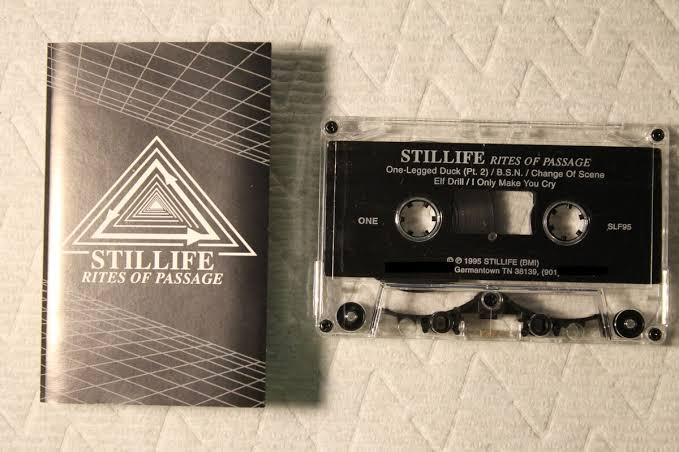

Начало
Музыкальный коллектив Stillife был образован в декабре 1998 года Станиславом Ивановым (Stan_I) и Михаилом Соколовым (M.S.). Спустя два года уже в декабре 2000 года собственными силами проект выпускает дебютный альбом Raining December, выдержанный в стилистике дарквейв и ставший в один ряд с релизами ведущих музыкальных проектов данного направления. Альбом был издан на аудиокассете и посвящён характерным для данного стиля темам любви, одиночества и человеческой трагедии. 4 ноября 2001 года Stillife принимают участие в фестивале Edge of the Night IV, где им удалось сыграть на одной сцене вместе с Purple Fog Side и Endraum. В ноябре этого же года альбом официально выпускается лейблом Irond Records на CD, в который, помимо оригинального материала альбома, вошли несколько эксклюзивных бонус-треков. Альбом хорошо был встречен как в России, так и на Западе. В июне 2002 года немецкое радио Resistance! признало его альбомом месяца наряду с такими альбомами, как Kalte Sonne группы Zeraphine, Judas Christ, Tiamat и Addendum Assemblage 23.

Воспоминание
В 2003 группа сделал взаимные кавер-версии с немецкой группой Endraum. Stillife сделали свою версию песни «Traumstaub», которая была включена в одноимённый альбом Endraum. Результатом работы Endraum стал ремикс «Es ist die Stille (Endraums Vision)», вошедший в третий альбом Stillife «Remembrance», который вышел на лейбле «Irond Ltd.» в ноябре 2003 года. 15 ноября 2003 года состоялся концерт-презентация альбома в московском «Р-Клубе». 5 декабря 2003 года Stillife приняли участие в международном готическом фестивале «Radio Inferno II», прошедшем в городе Санкт-Петербурге. По итогам голосования на сайте www.gothic.ru за 2003 год Stillife в очередной раз были признаны «лучшей русской группой года» и «лучшей русской группой всех времен». В марте 2004 года состоялись сольные выступления группы в городах Санкт-Петербург (клуб «Молоко») и Москва (клуб «Точка»).

Кризис
В честь десятилетия группы было решено выпустить ограниченное digibook-издание «Destiny». Однако, назревшие разногласия в группе чуть было не похоронили группу. Stan_I в одном из интервью сказал об этом так: Действительно, в конце 2008 года Stillife как никогда был близок к закрытию. Основанием для приостановки деятельности стал разразившийся кризис в отношениях между основателями проекта. Однако закрывать Stillife навсегда мы точно не имели права, так как этот проект слишком много значил для каждого из нас. В итоге, при отсутствии какой-либо активности проекта, мне пришлось практически в одиночку заканчивать лимитированное издание “Destiny”, грозившее стать последним альбомом Stillife. Тем не менее, несмотря на все трудности издание вышло 27 июля 2009 года.
Воссоединение
23 февраля 2010 года, в день десятилетия своей первой студийной записи трека «Farewell», группа объявила о возобновлении творческой активности. В ходе российского турне группы Lacrimosa Stan_I подарил несколько дисков «Destiny» команде техников Lacrimosa, а также лично Тило Вольффу. Одному из техников альбом очень понравился, он поставил диск в качестве фонограммы перед концертом и пообещал проигрывать его перед всеми остальными концертами этого турне Lacrimosa. В конце сентября 2010 года стало известно, что Stillife сделали собственную версию композиции «A.u.S.» с альбома «Sehnsucht» на основе оригинальных аудиоматериалов, предоставленных лидером Lacrimosa Тило Вольффом, и специально записанных для этого ремикса музыкантами Stillife партий альта, акустической гитары и баса, таким образом став первой российской группой, официально сделавшей ремикс на одну из композиций группы Lacrimosa. Ремикс «A.u.S.» от Stillife вошёл в треклист специального диска, который в качестве подарка получили посетители концертов «Карнавал Теней» в Екатеринбурге (28 октября, TeleClub) и в Москве (31 октября, Точка), на которых группа выступила совместно с Тило Вольффом.